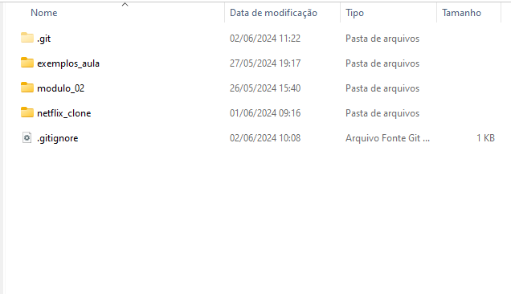

Histórico do powershell com os comandos realizados para instalação do repositório de exercícios do módulo 02 do curso FuturoDev:
git init
git remote add origin https://github.com/diegocmps/futuroDev.git
git add .
git commit -m "first commit"
git push
git add .
git commit -m "exercicio 02"
git pull
git push
